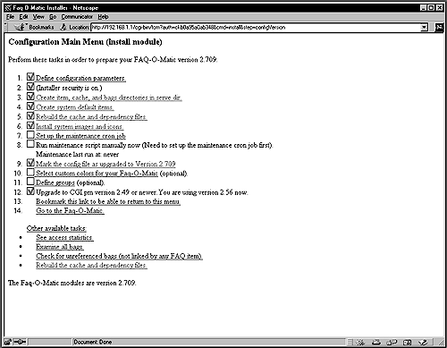
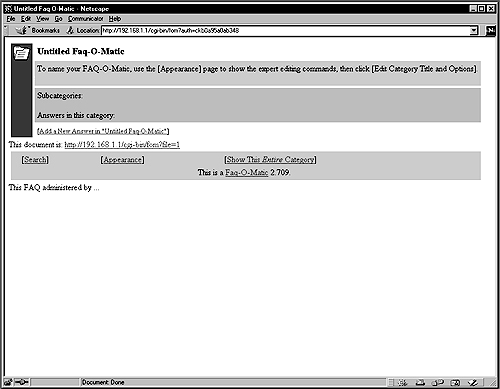

30.9. Configure your FAQ-O-Matic
The rest of this installation will be made through the use of your web browser. With Netscape Communicator, follow the simple steps below:
The first step is to load your web browser and use it to configure Faq-O-Matic.
Point your Netscape browser to the following location:http://my-web-server/cgi-bin/fom
Enter your temporary password
Create the /home/httpd/cgi-bin/fom-meta/ directory first
Configure the Define configuration parameters in the configuration main menu
-  Configure the rest of the Define configuration parameters as you need. Once you have finished setting your parameters, click on the button to validate your choices.
Example 30-1. Using Netscape browser
Fill under the sections marked Mandatory the following information:
$adminAuth= admin@openna.com $serverBase= http://www.openna.com $cgiURL= /cgi-bin/fom $serveDir= /home/httpd/faqomatic/ $serveURL= /faqomatic/ :
The my-web-server is the address where your Apache web server resides, and the temporary password is the one you should have received by mail during the install stage of this software.
:
The my-web-server is the address where your Apache web server resides, and the temporary password is the one you should have received by mail during the install stage of this software.
Once you have finished configuring the Define configuration parameters, you must perform the rest of the FAQ-O-Matic configuration in order to be able to use it as described in the configuration main menu of the FAQ-O-Matic software. 
Please do cleanup later:
[root@deep ] /# cd /var/tmp [root@deep ]/tmp# rm -rf FAQ-OMatic-version/ FAQ-O-Matic-version.tar.gz
The rm command will remove all the source files we have used to compile and install FAQ-O-Matic. It will also remove the FAQ-O-Matic compressed archive from the /var/tmp directory.